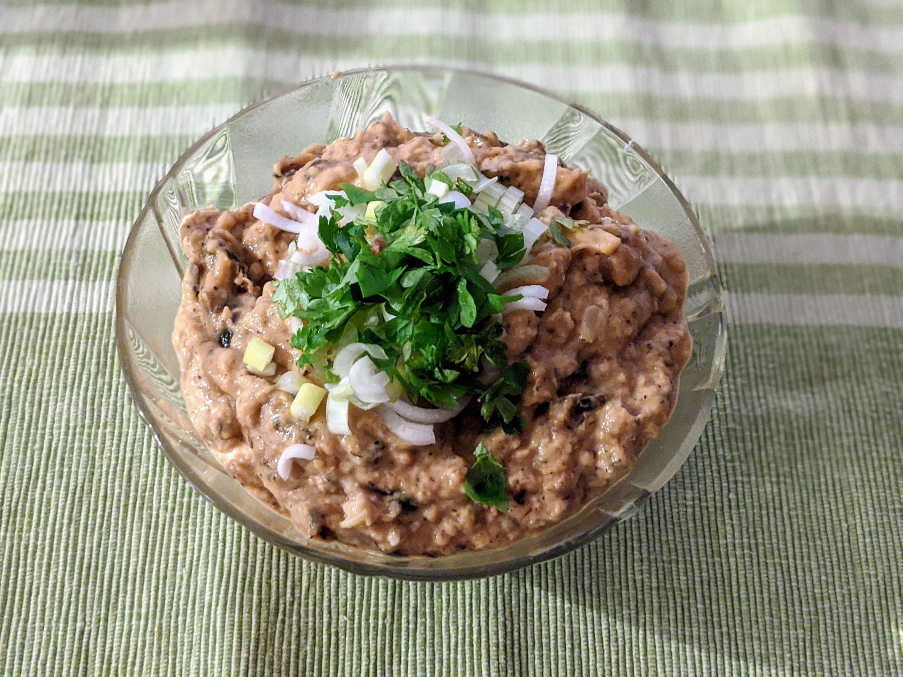

..@..♦.D.

|
Présentation 
|
Blog
|
Recettes
|

Pour une belle quantité de houmous :
Remarque : cette recette est prévue pour des courgettes au barbecue, donc c'est une bonne idée de prévoir des courgettes en plus quand on fait des grillades. C'est aussi possible de faire ça à partir de restes de courgettes marinées grillées, auquel cas l'ail, le piment, le sel et le poivre ne sont pas nécessaires.